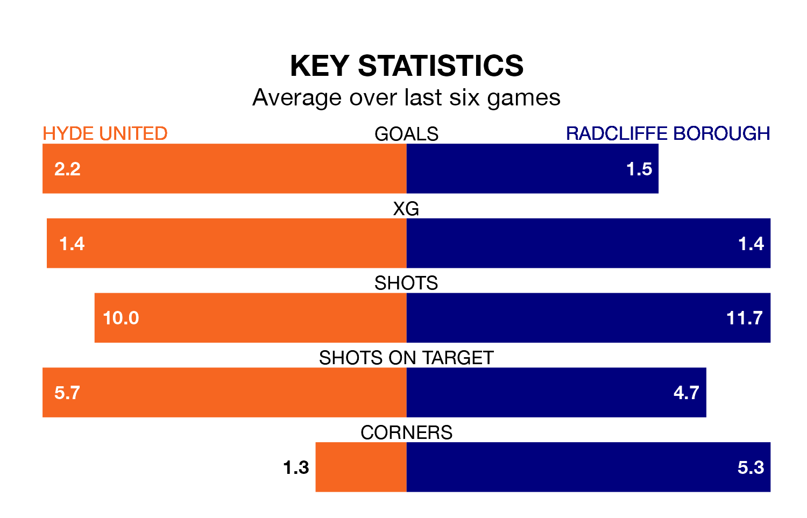

Radcliffe Borough travel to Ewen Fields for Saturday's match against Hyde United looking to bounce back from defeat last time out in Northern Premier League.
The Boro, who sit top of the league after 19 games, fell to a 3-2 home defeat to Rylands on December 16.
They face a Hyde side who secured a draw in their last match, a 2-2 tie with Guiseley, and who sit eighth in the table.
With 55 goals in 19 games so far this season, Radcliffe are the league's highest scorers with 2.9 goals per game. And they are conceding fewer than average, letting in 27 goals at a rate of 1.4 per game.
Hyde, meanwhile, are below average scorers, with 1.6 goals per game, compared to a league average of 1.7. They have conceded 1.3 goals per game.
Over the last two years, Hyde and Radcliffe have played each other on four occasions. Radcliffe won three of them and they drew once.
On average, Hyde scored 0.8 goals and the Boro 1.8 in those matches.
Their last meeting was on August 19, when Radcliffe won 2-0 at home.
United are in mixed form in Northern Premier League, with two wins and three draws from their last six games.
With three wins and three losses over that period, Borough's form is similar – they have both taken nine points from 18.
Updated: 12:43, 20/12/23